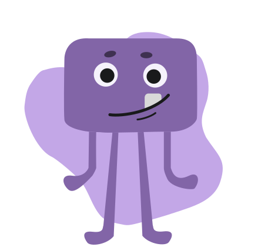
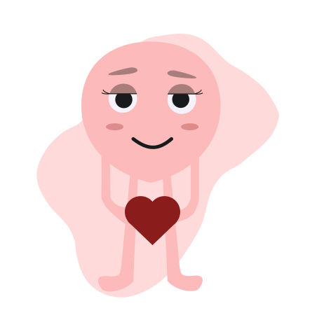
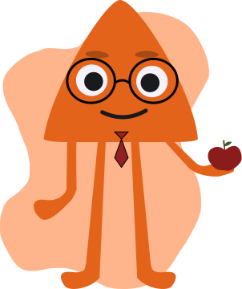
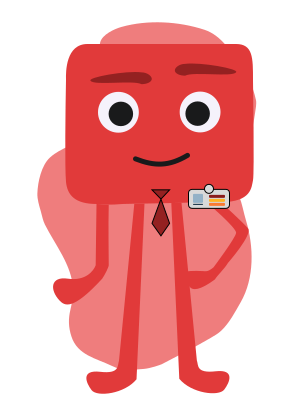
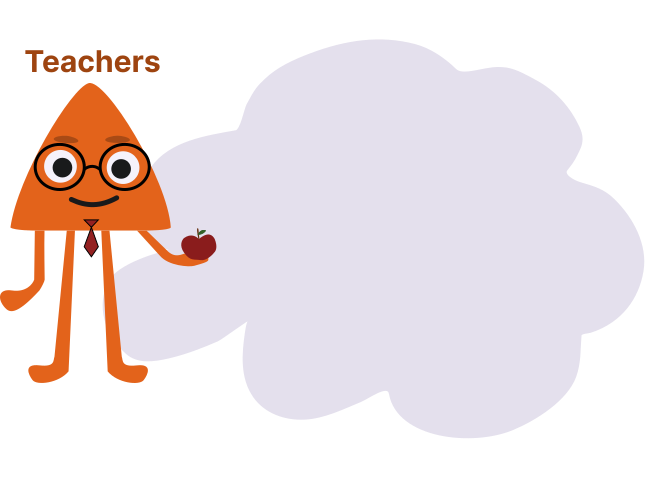

The platform
Four people hold a student's wellbeing. Four different views.
A day in a hall changes a conversation. Keeping it changed takes a system — one where the student owns their space, the parent is supported rather than deputised, and the school can see patterns without reading anyone's diary.
The heroes of Welmnt
One system, four views

- Mood tracking
- Interactive journaling
- AI mental coach
- Personalised curriculum
- Mental-fitness milestones

- Track progress
- Monitor wellbeing
- Alerts for time-sensitive situations
- No access to private entries

- Detailed student insights
- Assign personalised tasks
- Tailor curricula to need
- Classroom dashboard

- Analytics & reports
- User management
- School-wide standards
- Policy implementation
Where this stands today. The parent assessment and the live room screen are built and have run inside schools. The full four-role platform is the direction we are building toward. We would rather say that plainly than sell you a login that isn't ready — if you need a system in production this term, talk to us about the programmes instead.
Design principle
Support, not surveillance
The fastest way to lose a teenager is to make the thing that was supposed to help them into the thing that reports on them. So the lines are drawn before the features are: a student's private reflections stay private, parents get high-level progress rather than transcripts, and schools get cohort patterns rather than individual confessions.
No diagnosis. No labelling. No score anyone else gets to hold over them.

Beyond the dashboards
Services that wrap the platform
Mental-health assessments
Structured evaluations at key milestones, with progress tracked over time rather than sampled once and filed.
Curriculum integration
Mental-health lessons sequenced into the school's actual timetable, not bolted on as an assembly nobody scheduled.
Crisis protocols
Clear escalation paths to the school's own counsellor when something surfaces that needs a professional. We route it; we don't treat it.
Bring Welmnt to your school.
Tell us the school, the audience and roughly when. We come back with a format and a date — and a written proposal within 48 hours of agreeing the shape.